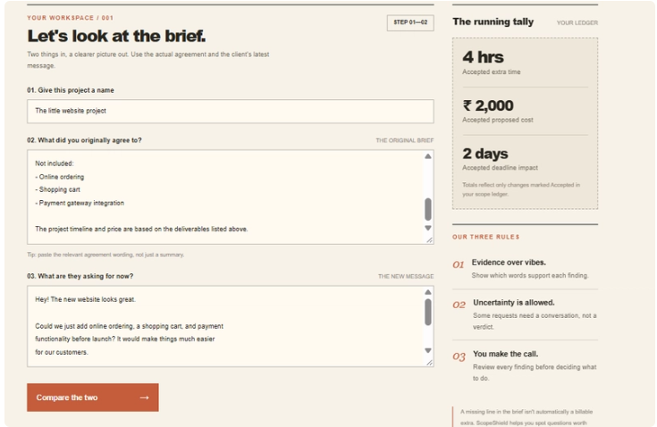
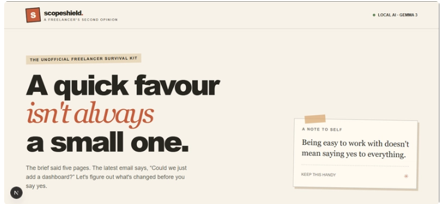

Project 04 // AI / Freelance Tooling
04
ScopeShield
Local AI scope-creep detector for freelancers
ScopeShield is a local AI-powered scope-creep detector for freelancers. It compares new client requests against an original project agreement, highlights potential scope changes, and helps draft polite, professional replies — with inference running on your own machine.
View repository → Local-first · runs on your machine
3
Verdict categories
4b
Gemma 3 parameter size
0
Agreements sent to a server
1
Running Scope Ledger

The problem
Freelancers agree to work they never quoted for. A client email that quietly adds a feature gets agreed to in a hurry, and the scope erodes until the project stops being worth doing.
What I built
ScopeShield compares the client’s latest message against the original agreement, classifies each request as included, potentially additional or needing clarification, highlights the exact clauses behind that verdict and drafts a professional reply. Every accepted extra hour, cost and slipped deadline is tallied in a running Scope Ledger. Inference runs locally through Ollama and Gemma 3:4b, so no client agreement ever leaves the machine.
The verdict system
- Included — the request is already covered by the agreement.
- Potentially additional — the request sits outside the agreed scope and should be quoted for.
- Needs clarification — the agreement is ambiguous, so the right move is to ask.
- Each verdict is backed by the specific clause evidence it was drawn from, not just a label.
How it runs
- Next.js, TypeScript and Tailwind CSS for the interface.
- Ollama for local AI inference, running Gemma 3:4b on your own hardware.
- A Scope Ledger that keeps every previous analysis in one running tally.
- Draft replies written for you to review — you decide what actually gets sent.
Local-first, on purpose
ScopeShield is deliberately built to run offline. Clone the repository, install Node.js and Ollama, and the model runs on your own machine — no API key, no usage meter, no client agreement sent to a third-party service.
That matters for this particular problem: the documents being analysed are contracts with named clients and named fees. Keeping them local is a feature, not a limitation.
More from the build


- Next.js
- TypeScript
- Tailwind CSS
- Ollama
- Gemma 3